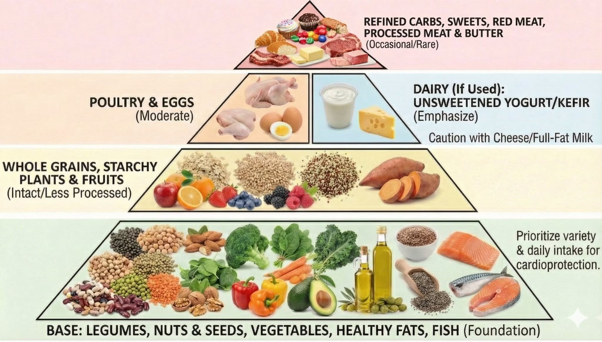
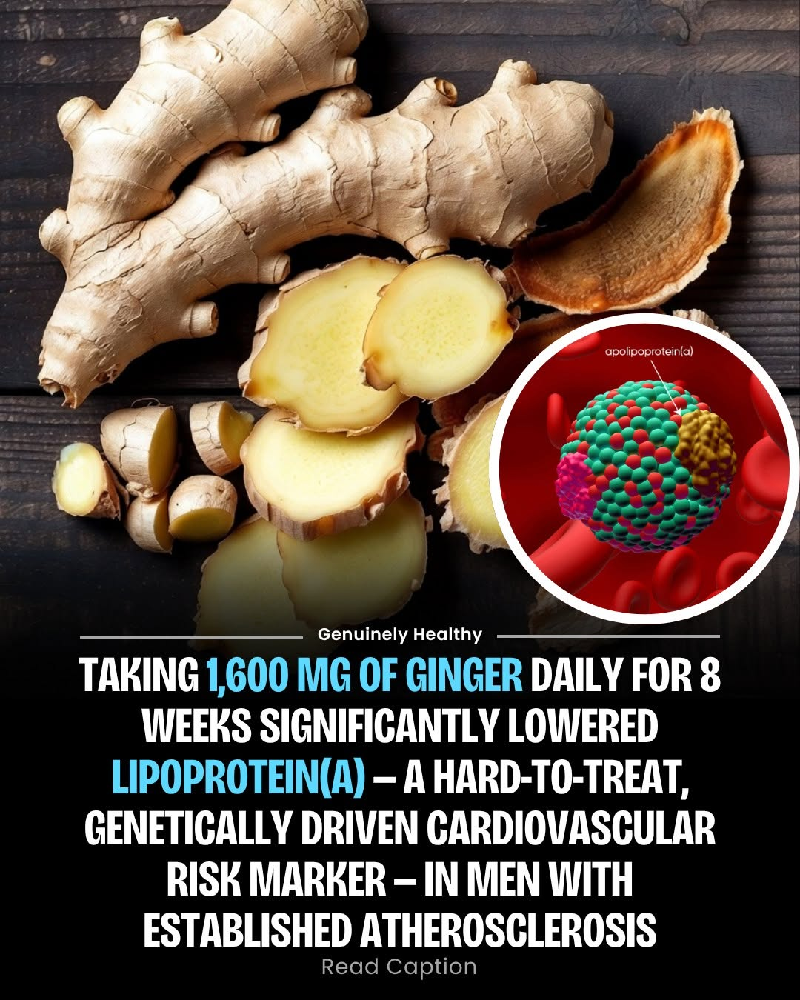
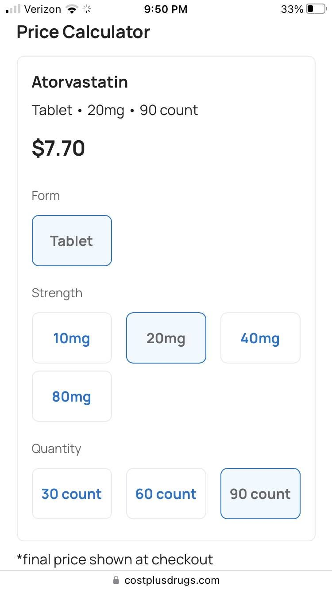

Mediterranean diet do's and don'ts
A practical guide to the Mediterranean diet: prioritize colorful produce, whole grains and healthy fats, and avoid ultra-processed foods. Includes tips such as choosing low-sugar berries when craving sweets.
A practical guide to the Mediterranean diet: prioritize colorful produce, whole grains and healthy fats, and avoid ultra-processed foods. Includes tips such as choosing low-sugar berries when craving sweets.
Louis highlights a 2023 Columbia University study on taurine and aging in worms, mice, monkeys and humans, noting taurine also benefits the cardiovascular system. He stresses that age is the biggest causal risk factor for heart disease and taurine might be an anti-aging intervention, with emphasis on 'might', and that it seems reasonably safe.
Responding to Esselstyn's reliance on a short-term study of refined olive oil impairing endothelial function, the poster notes exercise causes the same transient dip followed by rebound. Quoted exercise physiology papers describe an immediate FMD nadir followed by normalization or supranormalization, and he says over 30 RCTs show olive oil improves FMD long term.

In a personal reply, Louis notes that Ancel Keys lived to 101 on the Mediterranean diet and that he follows it too while taking a low-dose statin (10 mg atorvastatin), which costs about $16 a year without insurance.
Data-rich overview of pioglitazone's effects on plaque. In PERISCOPE (543 type 2 diabetes patients with CAD, 18 months, IVUS) pioglitazone lowered percent atheroma volume while glimepiride raised it. A smaller trial (Ogasawara 2009) found reduced necrotic core and higher adiponectin, suggesting benefit via reduced inflammation.
Louis summarises a Harvard cohort analysis of over 200,000 adults across the Nurses' Health Study and related cohorts. Replacing butter with unsaturated plant oils was associated with lower cancer and overall mortality, with the biggest benefits from olive, canola and soybean oil.
A May 2024 analysis of the Nurses' Health Study and Health Professionals Follow-up Study found at least 7 g of olive oil daily was associated with 28% lower dementia-related mortality versus never or rarely using it, regardless of genetic predisposition and overall diet quality.

Louis links a UCSF study (Annals of Neurology) of 231 healthy older adults: lower active B12, even with total B12 above the deficiency cutoff, went with slower processing speed and more white matter lesions on MRI. He suggests B12 may explain the cognitive benefit of a basic multivitamin in COSMOS.
A long point-by-point rebuttal of anti-statin claims. It cites a meta-analysis linking statins to lower dementia risk, the SAMSON trial on nocebo muscle pain, JUPITER's 44% reduction in major events, and a pooled analysis showing about 5 cardiac events prevented per extra diabetes case.
Louis explains that STAREE (atorvastatin 40 mg versus placebo in healthy adults 70+, focused on disability-free survival including dementia) is finished and will report soon. Because it was not stopped early for harm or overwhelming benefit, results likely lie in between.
Louis details YELLOW-III: in 6 months, high-dose statin plus a PCSK9 inhibitor with LDL of 30-40 mg/dL strengthened the fibrous cap and reduced total plaque volume, mainly by shrinking the soft lipid core, in a 'melting butter' pattern.

Louis warns that the only proven benefit of testosterone therapy is treating clinically diagnosed hypogonadism and no credible study shows longevity benefit. He cites data from 3,690 men aged 70-92 showing an inverse U-shaped relation between testosterone and mortality, with risk rising above an optimal level, plus animal studies showing androgens shorten and castration extends lifespan. The animal evidence and sex-difference argument are suggestive, not proof in humans.
Louis states that among people with identical coronary calcium scores, the fitter and more active have substantially lower heart attack risk over the following 20-25 years. The post links a short sports-cardiology video and gives no specific study or numbers.

Louis highlights that no drug has been shown to cut both total and cancer mortality by about 40% in healthy people within 5 years, yet this was seen with nuts in PREDIMED. He stresses the caveat that it was a post-hoc observational analysis of an RCT.
Louis summarizes the oatmeal study, noting participants had BMI over 30 with metabolic syndrome and ate 1100-1200 kcal/day; controls on the same diet did not see the same benefit.
Louis rebuts Caldwell Esselstyn's claim that EVOO impairs endothelial function, citing a randomized crossover trial in adults at risk for type 2 diabetes. A single 50 mL dose of high-polyphenol EVOO improved flow-mediated dilation compared with refined olive oil, with no acute blood pressure effect, and the authors note that reports should specify the oil's characteristics.

Louis shares a UK user's comparison of a bulk cacao extract (20:1) with CocoaVia's CocoaPro (24:1). The poster calculates that 1.5 g should provide about 500 mg cocoa flavanols, though the supplier does not test flavanol or epicatechin content directly. It is a consumer tip rather than evidence.
Louis explains he takes K2 for insulin sensitivity, not unproven calcification claims. In a Diabetes Care 2011 trial, 42 participants given 30 mg MK-4 for 4 weeks improved insulin sensitivity and disposition index, apparently via osteocalcin.
Louis reports observational analyses within PREDIMED. Those on a Mediterranean diet plus nuts >3 times weekly had markedly lower total, CV and cancer mortality, though not proof of causality.
Gokhan reports using aged garlic extract for five years on top of low-dose rosuvastatin, an ACE inhibitor and fish oil, and links a video on garlic and plaque.

A 2021 narrative review in Open Heart describes vitamin K2 as a regulator of calcium in the cardiovascular system by activating matrix Gla protein (MGP). Low vitamin K status leaves more inactive MGP, which has been linked to arterial stiffness and vascular calcification. It is a narrative review, not outcome trial evidence.

Louis (while attacking Eric Berg) explains that sun-made vitamin D has a negative feedback mechanism, but supplements do not, so taking 20,000 IU of D3 daily for months or years risks hypercalcemia, which can cause sudden cardiac arrest and arterial calcification.
A small study of 33 patients, mostly intolerant of other lipid drugs, found that dosing ezetimibe only three times a week still lowered LDL substantially, consistent with its 22-hour half-life. Most patients tolerated it.

Louis notes aged garlic extract (Kyolic) slowed plaque growth and regressed high-risk soft plaque in a small CT angiography RCT, and a 2006 RCT showed about half as many colorectal adenomas on the high dose.
The post lists six effects of metformin reported in randomized trials of non-diabetics (long Covid, Covid outcomes, periodontal disease, muscle loss, knee osteoarthritis pain, oral pre-cancer lesions) and argues they share aging as a risk factor. It mentions a monkey study and the planned TAME trial testing whether metformin slows aging; most evidence is linked via Facebook shares.

Gokhan highlights a mouse study in which restoring youthful VEGF signaling kept blood vessels healthier with age, improving metabolism, muscle, bone and inflammation and extending lifespan by 45%. He speculates about human applications such as walking and daily activity, but the finding is in mice.

Admin proposes the Heart Disease Optimal Prevention and Management (HD-OPM) food pyramid for the group, heavily inspired by Mediterranean principles, in response to the new MAHA pyramid. The pyramid itself is an image, so the text has no specifics.
Louis rebuts Esselstyn's claim that EVOO impairs endothelial function, citing a crossover RCT in adults at risk for type 2 diabetes where high-polyphenol EVOO acutely improved function while refined oil lowered it.
Louis criticises a media-hyped case report of liver damage in a woman taking turmeric capsules, noting average daily turmeric intake in India is about 2.5 g and she took 2.25 g. He suggests contamination is the likelier cause and argues anecdotes are not clinical evidence.
Gokhan argues media coverage misrepresented KETO-CTA: it compared keto dieters with LDL around 200 to those around 300, with no low-LDL control, and still showed substantial new plaque, progressing like high-risk conditions. He says he would not keto as a lean mass hyper-responder and controls his own LDL with low-dose rosuvastatin.
Louis notes that the latest American College of Cardiology scientific statement recommends measuring and treating hsCRP and points out that statins do this effectively. He reshares a 2022 meta-analysis of 26 RCTs showing statins lowered hs-CRP and CRP in patients with CVD.

Louis explains that CGMs measure glucose, not insulin, and that some proteins provoke as much or more insulin than carbohydrates. Citing the 1997 insulin index paper and a 2012 whey study, he shows beef raises insulin more than pasta or oatmeal calorie for calorie, and whey more than glucose or white bread, so swapping protein for carbs may raise post-meal insulin.

Louis fact-checks a viral claim that humming raises nitric oxide 1400%: that equals about a 15-fold rise in nasal production (not 'brain' production as the post said), a finding from Weitzberg's 2002 work. A small randomized trial of bee-humming breathing in hypertension suggests blood pressure may fall, though whether nitric oxide is the mechanism is unclear.

Louis highlights a small human trial in which berberine reduced atherosclerotic plaque score, with a proposed mechanism of lowering gut-derived TMAO by acting on TMAO-producing gut bacteria. The sample is small and the comparison group was not randomized to the same degree as a large trial, so this is hypothesis-generating.

Responding to influencers who say plaque cannot be reversed with statins, Louis cites a case report in which a patient taking low-dose atorvastatin went from a severe to a mild LAD narrowing, documented on CT angiography. It is a single case, but illustrates that statin-associated plaque regression can occur.
Louis summarizes the newly published one-year prospective Keto-CTA study of lean, metabolically healthy people on keto with very high LDL (mean 254 mg/dL). Those with baseline plaque progressed significantly at similar rates regardless of how high the LDL was, while those with zero plaque were unlikely to develop it within a year. There was no low-LDL comparison group.
Louis summarizes a randomized crossover study that matched saturated fat in full-fat yogurt versus low-fat yogurt mixed with butter for 4 weeks each. The butter version raised ApoB while full-fat yogurt lowered it, which the authors attribute to the milk fat globule membrane (MFGM) that stays intact in yogurt but is lost in butter. This may partly explain yogurt's favorable epidemiology.
A long evidence summary on taurine: deficiency causes cardiomyopathy in cats and in humans with transporter defects, higher taurine intake correlates with lower coronary disease, and animal studies show reduced atherosclerosis and vessel relaxation. The author is considering a supplement against chronic inflammation; most evidence cited is animal or observational.
Louis shares a Cell paper from Yale suggesting blood taurine levels are central to how the body controls inflammaging, with taurine controlling an innate immune inflammatory response. Researchers plan future studies to test whether taurine supplements protect against age-related disease. He adds his own note on the geroscience context.

A 2008 trial in type 2 diabetes patients found 3 months of glycine reduced HbA1c versus baseline and placebo and shifted inflammatory markers toward a protective profile.
Louis explains that coronary CT angiography is 'lumenography': contrast dye fills only the lumen, so early plaque growing inside the artery wall is mostly invisible until it narrows the lumen. A perfect CCTA therefore does not rule out early-stage plaque. He links a Dr Alo video on this blind spot.
A Kaiser Permanente Southern California cohort matched 102,766 Shingrix recipients to 411,064 unvaccinated patients. Vaccinated people had lower shingles complications and fewer hospitalizations for heart attack and stroke. Gokhan notes the effect sizes are striking and that flu vaccine has similar heart-protective effects.

Louis shares Cory Crawford's account and credits Roy Taylor's liver and pancreas fat model. The author reports A1C falling from 10.7 to 5.5 in about four months. This is an anecdote, not a study.
A personal reflection after a friend who ignored a prescribed statin had a heart attack at 48 and needed bypass surgery. Gokhan considers retrying low-dose ezetimibe to approach an LDL of 50 mg/dL with his cardiologist's support.
Louis warns that experimental PCSK9 gene therapies for lowering LDL may be unsafe because people have died in trials, and notes that safe, effective drugs already exist, including PCSK9 inhibitors. He clarifies that the deaths were specific to the gene therapy in that trial, with unclear cause, and were not seen in long PCSK9 inhibitor drug trials.

A post explaining that U-shaped hazard curves in observational data appear for cholesterol, BMI, A1C and blood pressure alike, and are explained by reverse causality rather than benefit of high values. Illness lowers LDL, BMI, A1C or blood pressure, creating false appearances of protection.

Louis shares a graph of every statin RCT up to 2016 that showed a significant effect on cardiovascular outcomes, excluding trials under 6 months or with under 50 events. On average, a ~75 mg/dL (1.9 mmol/L) LDL reduction cut heart attack and stroke risk about 40% vs placebo, with primary-prevention trials showing even larger reductions than secondary-prevention trials.

Personal message to his cardiologist: on rosuvastatin 5 mg plus ezetimibe 10 mg his LDL was 90 then 63 mg/dL, not very different from low-dose rosuvastatin alone. He is concerned that fasting insulin rose roughly 50% on any rosuvastatin dose and wants to explore pitavastatin and a PCSK9 inhibitor. Anecdotal, n-of-1.

Summarises a Carvalho video: arterial calcium is a marker of long-standing plaque, not the cause of risk, so lowering a calcium score can mislead, just as statins raise calcium while lowering risk. No large properly powered trials show K2 reduces heart attacks or strokes, and he warns of false reassurance. The admin adds that supplement use is fine but expectations should stay grounded.
Louis says dozens of randomized trials show omega-6-rich oils do not raise inflammation, and some show anti-inflammatory effects, calling the opposite claim a major myth from influencers. He shares a Brad Stanfield video reviewing the evidence and links earlier group posts.

The poster reviews observational studies: a 2012 US cohort (n = 77,510) with 33% lower mortality, UK Biobank (nearly 500,000) with 15% lower cardiovascular events, and a 2020 US cohort (~16,700) with 65% lower CV mortality. He proposes anti-inflammatory and anti-aging mechanisms, noting RCT proof is lacking.

Short post sharing a Cell paper suggesting shingles vaccination may be a strong tool to prevent or slow dementia: associated with less mild cognitive impairment and dementia in healthy people and fewer deaths in those who already have dementia.

Louis argues the Esselstyn diet is probably healthy and likely lowers cardiovascular risk, but that claims for it are overhyped. Esselstyn's published work consists of case reports and case series, which sit low on the evidence hierarchy, so the strong evidence for plant-based diets in general should be allowed to speak for itself.
The post explains that insulin signals the liver to make more cholesterol by keeping HMG-CoA reductase active, one reason insulin resistance and metabolic syndrome go with high cholesterol. It argues protein, especially animal protein, also raises insulin, partly offset by glucagon, and that swapping animal for plant protein lowers cholesterol beyond saturated fat and fiber effects. Much of the protein argument is the poster's inference.
Louis lists human trials in which statins reversed or halted atheroma growth measured as percent atheroma volume (PAV). High-dose atorvastatin and rosuvastatin regressed PAV in SATURN and ASTEROID, while REVERSAL showed halted progression versus pravastatin. COSMOS added canakinumab to rosuvastatin, and PROSPECT and JAPAN-ACS showed lower progression on statins.
Louis's earlier post claimed GLP-1 drugs regrow joint cartilage and linked the Cell Metabolism study. He added an edit noting that the shared post had the wrong journal and overstated some implications, though the 17% cartilage increase is correct, and pointed to a corrected post.

A NEJM randomized trial of over 3,000 patients with established heart disease compared an LDL goal under 70 (statin) with under 55 (statin plus ezetimibe). The lower target had 6.6% vs 9.7% major events over 3 years with similar safety.

Louis summarizes an Annals of Internal Medicine systematic review of 17 randomized trials with hard endpoints. Replacing saturated fat with polyunsaturated fat lowered non-fatal heart attacks by 25% in higher-risk people over 5 years, similar to a lower-dose statin; other outcomes trended favorably but were not fully significant when the replacement was the general diet.
Louis shares a 2026 randomized crossover trial in healthy adults in which daily tomato intake improved cognitive performance and modulated functional brain networks. Media coverage describes modest gains in attention and memory after three months of tomato paste. The trial is small.

Louis highlights the American Heart Association's 2023 scientific statement updating its 2007 one on resistance training. It concludes resistance training, alone or with aerobic exercise, is safe and effective for improving cardiovascular health and risk factors in adults with and without cardiovascular disease.

Argues that the benefit of LDL lowering depends on both how much and how long LDL is reduced. The author, one of the group's admins, is betting on very low-dose statins to hold LDL at 70-100 mg/dL, and estimates about 60% lifetime risk reduction from a 70-point lowering sustained for 30 years. The post also cites Charles Grashow as a case of CAC regression.
Louis summarizes the 3-year DO-HEALTH randomized trial in adults 70 and older. Omega-3 slowed three epigenetic clocks, with additional benefit from vitamin D plus exercise, alongside other functional benefits.
The poster notes that 90% of heart attacks occur in right-handed people and asks whether training yourself to be left-handed would lower CVD risk, to illustrate how influencers misinterpret correlations. Most people are right-handed, so the statistic reflects base rates, not causation.
Louis shares the first outcome-trial result for an Lp(a)-lowering drug: topline data from Novartis say pelacarsen lowered Lp(a) but did not show reduced cardiovascular risk overall. He says the result seriously questions whether Lp(a) is directly causal, noting only a press announcement is available so far.
Louis argues that a 2024 two-sample Mendelian randomization study found no association between genetically predicted cardiorespiratory fitness and longevity or diabetes. He interprets the observational VO2-max/mortality link as reverse causality or confounding.

Louis explains relative versus absolute risk in statin trials. Statins cut absolute heart attack or stroke risk by 1.1% to 4.7% in roughly 5-year RCTs, which is large against a lifetime risk of about 20%, and sustained over decades could lower lifetime risk toward 10%. He shares a graph combining RCTs (over 20% risk reduction after 5 years), prospective cohorts (over 30% at 12 years) and Mendelian randomization (over 50% at 52 years) for a 39 mg/dL LDL reduction.
Louis cites meta-analyses showing statins can raise Lp(a) by 5-20%, and a video of Stanford's Joshua Knowles explaining this is clinically unimportant and that statins are an important part of treating genetically high Lp(a). Across 25 statin trials, lowering LDL by about 75 mg/dL cut MACE roughly 40%, with larger relative reductions in primary prevention.
Louis argues that although most heart attacks are caused by clots, clots form when unstable plaque ruptures, so people with near-zero plaque have near-zero risk of clot-caused heart attacks. Blood thinners like aspirin are proven to lower risk in people with considerable plaque but are unlikely to help, and may harm, those with little or no plaque.

BoxLife reports a man reversed arterial plaque in 16 weeks with salmon, greens, olive oil, berries, garlic and flax. Louis says randomized trials support plaque reversal with this kind of diet.

Louis criticises a CGM influencer claim that adding protein such as whey to fruit lowers glucose spikes. He argues protein forces larger insulin responses than equivalent carbohydrate calories, so lower glucose does not mean lower metabolic stress.

Louis shares a Clinical Nutrition study in which a daily 60 g serving of skin-roasted peanuts improved global brain blood flow by about 4% in older adults, roughly the decline seen over 10 years of aging. He suggests arginine-driven nitric oxide as the mechanism, and nuts as slow-release arginine that may also help heart health.

Louis highlights the SATURN trial, where high-dose statins reversed plaque by about 1-2% PAV over two years, and each 1% PAV reversal is associated with about 20% fewer MACE. A shared meta-analysis of 31 studies and 4,997 patients (Li 2021) found lipid-lowering lowered TAV and PAV on IVUS.
Louis recommends a post discussing each of the seven commonly used statin drugs and how statins work generally. The shared content is no longer available.

Louis discusses a double-blind RCT in 57 men with atherosclerosis: ginger cut Lp(a) by about 5 ng/mL (from a low baseline of 27), hsCRP by 0.66 ug/dL and fasting glucose 12.5%.
Louis quotes a JACC: Advances cohort analysis comparing low-carbohydrate high-fat (LCHF) eaters with standard-diet controls. LCHF had significantly higher LDL-C and ApoB, more severe hypercholesterolemia, and more major adverse cardiovascular events at 11.8 years; the association remained after adjustment. People with a high LDL polygenic risk score had the highest LDL-C on LCHF.
Louis describes a lean, active 35-year-old with a CAC score of 0 who had a massive heart attack after a carnivore/keto diet pushed his LDL to 372 mg/dL without familial hypercholesterolemia. He notes the man still denies cholesterol's role. It is an anecdote; a CAC of 0 does not exclude soft plaque.
Louis describes the DISCO-CT randomized trial, where a DASH-style diet with statins produced the largest soft plaque regression (NCPV) on CT angiography of any diet trial, -39.5 mm3 adjusted to one year. He puts this against about 5 mm3/year typical progression, with the caveat that this is relative to a typical American, not the patients' own history.

The admin announces a March 2026 Frontiers in Hematology paper with Dr Hasselbalch after five years of research. It analyses how cardiovascular drugs, supplements and lifestyle can be used in polycythemia vera and related blood disorders, and the links between cardiovascular disease, chronic inflammation and blood stem cell mutations.

A 120-person RCT gave 3 g taurine daily with a low-calorie diet for 8 weeks. Insulin, HOMA-IR, TNF, hs-CRP and MDA fell, but lipids, HbA1c and fasting glucose did not improve.
Louis explains that the FDA forced US red yeast rice products to remove lovastatin (monacolin K), the first statin, approved in 1986 as Mevacor, yet they still lower cholesterol through related monacolins. Some people intolerant of statins tolerate it, but it is unregulated with variable potency and lacks large long-running RCTs proving fewer heart attacks and strokes, so it is a gamble for high-risk people.

Gokhan advises against paying for NMR particle-size panels, pointing to Gil Carvalho's summary of a genetic analysis in about 200,000 people over 14 years. ApoB and Lp(a) best captured lipid-driven cardiovascular risk and LDL particle size added no further information.

Louis suggests nuts and seeds instead of protein powders, since their fat and fiber are cardioprotective, improve insulin sensitivity and are filling. He points to research showing protective effects of nuts and seeds against CVD.
Louis warns that L-arginine supplements, taken to raise nitric oxide, can be dangerous after a heart attack. A Johns Hopkins randomized trial of 153 heart attack survivors given 3 g arginine three times daily was stopped after six months when six deaths occurred in the arginine group and none on placebo. Citrulline, which the body converts to arginine, might carry a similar concern, which is his speculation.
Louis argues the Roy Taylor trial is the only high-quality RCT showing true diabetes reversal and that any diet producing around 30 lb of weight loss works the same way, whether carnivore or plant-based.
Louis shares a news report of a Brazilian meta-analysis of 55 observational studies with about 7 million patients. Staying on statins for at least three years was associated with 63% lower dementia risk; the STAREE and PREVENTABLE trials should clarify causality.

Louis critiques the angiogram of Esselstyn's patient Joseph Crowe, often cited as proof that diet cures heart disease. The baseline image came directly after a heart attack and showed plaque plus thrombus and vasospasm, so later opening of the artery reflects natural healing as well as diet. He also notes Crowe died at 72, about 28 years after a heart attack at 44.
Louis shares an anecdote that 3 of the 18 scientists in the Seven Countries Study group, who personally switched to a traditional Mediterranean diet, reached age 100, including Ancel Keys at almost 101. He calculates the chance of this happening by chance at roughly 1 in 10 billion, versus about 1 in 10,000 Americans reaching 100; it is an anecdote, not a trial.
Louis argues that mainstream nutrition science now sees refined sugar and refined starch, possibly including white potatoes, as direct causes of heart disease and diabetes, citing Harvard's Walter Willett in a ZOE interview. He notes about 40% of US calories come from refined sugar/starch and white potatoes, and says this should be replaced with healthier carbohydrate or healthy fat and protein sources. The post is opinion backed by an expert interview, not a specific study.
Louis comments on a video clip about the Lyon Heart Study, a randomized secondary-prevention trial in people with a prior heart attack. The traditional Mediterranean diet cut cardiovascular events about 70% and all-cause death about 70% over 2.5 years, which he calls the largest total mortality reduction reported in a CVD prevention trial and about twice the benefit of statins in secondary prevention.

Louis argues the Dirty Dozen is built on flawed methodology (EWG weights all pesticides equally and ignores EPA safety thresholds). Decades of Harvard cohort data on conventionally grown produce show benefit, and a shared Barbell Medicine video says most exposures sit roughly a million times below safe reference doses.

Louis summarizes a randomized crossover trial matching saturated fat between full-fat yogurt and low-fat yogurt with added butter. Despite equal saturated fat, the butter arm raised ApoB while full-fat yogurt lowered it, which the study attributes to the milk fat globule membrane (MFGM) that is intact in yogurt but lost in butter. He suggests this may partly explain why yogurt looks better than other dairy in epidemiology.
Louis describes a randomized feeding trial at Harvard Medical School and MGH asking if plain white potatoes impair endothelial function and promote arterial inflammation. The trial follows cohort findings linking potato consumption to hypertension and diabetes.
A shared review states that regular moderate-to-high intensity exercise reduces coronary plaque burden in CAD patients, with HIIT and moderate continuous training both leading to regression. Combining exercise with aggressive LDL control below 70 mg/dL gives additive benefit, while extreme volumes may increase calcification though with more stable plaque.

Louis lists six randomized trials showing reversal of total atheroma volume with statins: COSMOS ~5%, SATURN ~5.5%, ASTEROID ~6.5%, IBIS-4 ~7.5%, STABLE ~8%, JAPAN-ACS ~17%. Reversals were measured by CT angiography or IVUS and came from soft rather than calcified plaque. A shared chart relates LDL to TAV change across statin, PCSK9 and ezetimibe trials.

Louis says he aims for a cup of beans a day, in line with Blue Zone diets, and describes simple-ingredient pre-cooked bean packets (olive oil as only fat, about $2.75 each) he found at Walmart. It is a personal product tip with no cited research.
Louis summarizes a widely shared observational study: APOE 3/4 and 4/4 carriers eating unprocessed meat or fish had lower dementia risk and possibly slower progression, with fish and poultry equal to red meat. No benefit was seen in non-APOE4 carriers, and processed meat raised dementia risk in everyone.

Louis explains the University of Bonn RCT: 300 g/day oatmeal for 2 days with calorie restriction cut LDL about 10%, linked to gut microbiome phenolic metabolites, and persisted 6 weeks. He recommends slow-cook steel-cut oats.

Louis quotes an AHA journal analysis: age-adjusted heart disease mortality fell 66% (761 to 258 per 100,000) from 1970 to 2022, ischemic heart disease deaths fell 81% and MI deaths 89%, while other heart disease including heart failure rose 81%. Life expectancy rose from 70.5 to 77.9 years.

Louis counters the claim that pharma profits from pushing statins: most are off-patent generics, and he pays $7.70 for a 3-month supply of 20 mg atorvastatin without insurance. Atorvastatin is on the WHO essential medicines list, with near-zero margins. He recommends Cost Plus Drugs as a low-cost source.
Louis shares an interview with William Cromwell, an expert in both metabolic disorders and lipidology, who walks through evidence that insulin resistance and LDL (ApoB) are both independent causative risk factors for heart disease. Louis's takeaway is that neither is the 'true cause' and both need addressing.